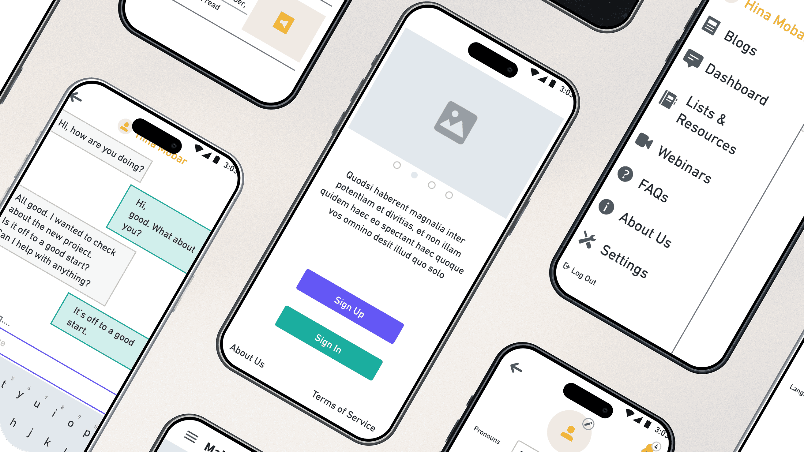
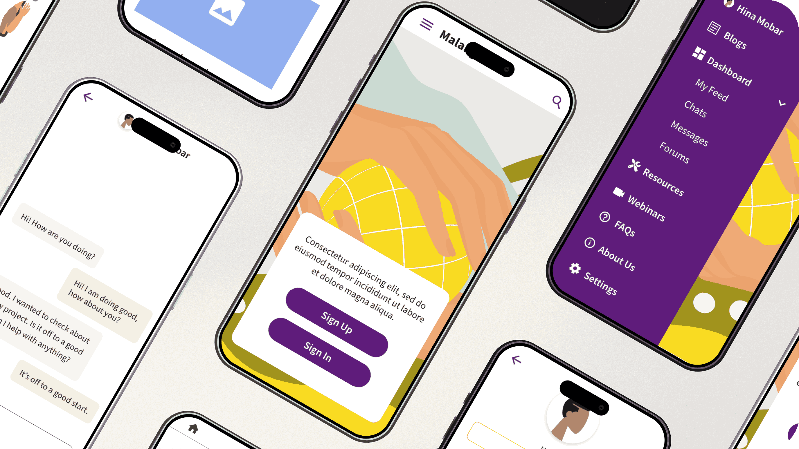
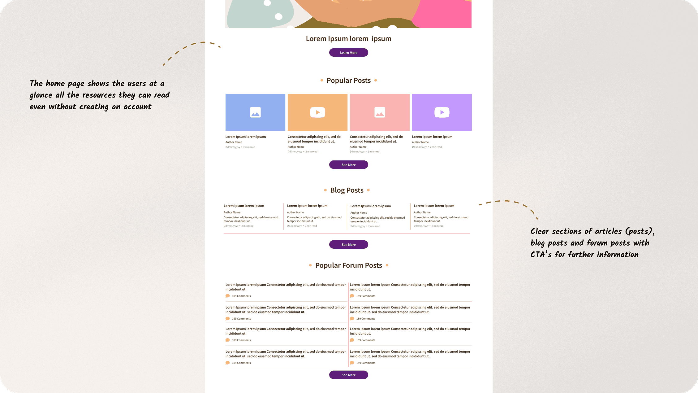
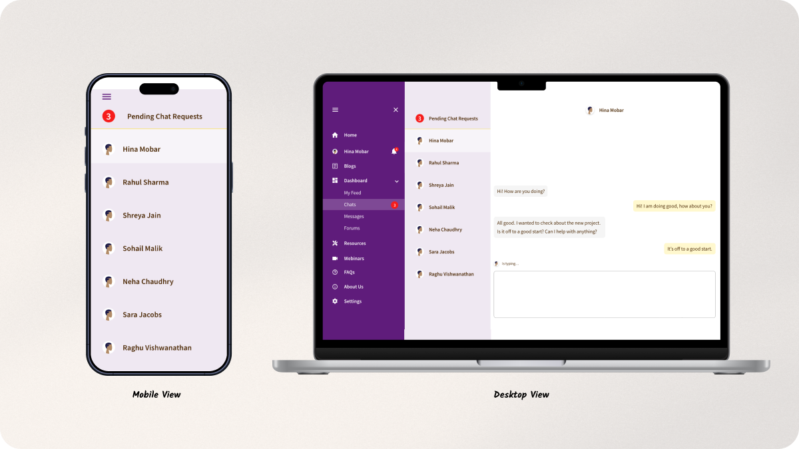
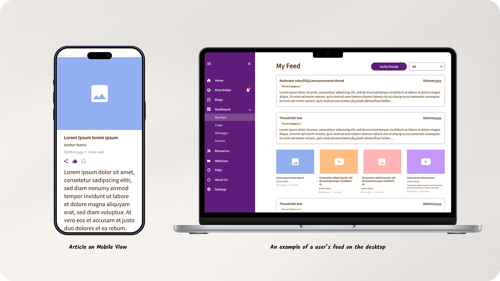

Deliverables
User personas
User flows
Wireframes
Logo
Final UI designs
Illustrations
Animations


Mann Malang | Designed in 2022
Mann Malang
Visual strategy to create a resource and support driven community for Intersex people
Overview
Mann Malang is a non-profit community for people with intersex variation to provide resources, support and foster connections.
My Role
As a UI and UX designer, I worked on the user experience, responsive UI designs, illustration and logo closely with the Founder and developers to build the MVP.
Deliverables
User personas
User flows
Wireframes
Logo
Final UI designs
Illustrations
Animations
Organization Goals
Easily accessible resources
To help users gain access to resources that may usually be hard to find
Community building
To let the users connect with like-minded people and build a community
Digital safety
To keep anonymity, privacy and safety at the forefront of the platform
My Process
The client came to me knowing the problem that needed to be tackled, the user types and a possible solution. I started the design process with discovering all the research the client had gathered, the proposed solution that the clients wanted to execute as well as the users requirements.
Intersex individuals, despite their substantial population, face societal invisibility, marginalization, and stigma. Misunderstandings about their diverse biological traits often lead to unnecessary medical interventions, negatively impacting their mental health.
People from the Intersex community often find it hard to find help or resources or even people who may be facing the same challenges as them in the world. Even caretakers (such as parents, siblings, etc.) of intersex people need access to helpful resources and to other people in similar situations as themselves.
User Research Insights
48%
Of intersex youth seriously considered suicide in the past 12 months
62%
reported lifetime anxiety disorders
18%
were subjected to illegal conversion therapy by psychologists or doctors, unlicensed counselors, or religious counselors.
66%
have reported that someone attempted to convince them to change their gender identity or sexual orientation.
Resource Hub
A space for users to find reliable information and resources for any intersex variation related subjects
Interactive community
A platform to interact with people facing similar situations and to foster support through the community
Functionality Definition
Based on the proposed solution, organisation and user goals, the functionality was defined as follows:
Resources
Community
User Roles Definition
3 types of users were identified and defined:
People with intersex variation
Caretakers of intersex people
Researchers/Activists
Accessible Resources
Considering the organisation goal of keeping all resources accessible to all the user types, the product was split into two main sections, what you could see when signed in and when signed out. If someone didn’t want to interact with the community, they would still have access to helpful information from blogs, articles, webinars and videos without signing in.
Mobile first strategy
A mobile design first strategy3, 4 was used to create designs for a PWA. This would be beneficial in India as it was a product that had to reach as many people as possible and the primary device to access the internet in India is a smartphone1, 2.
Intersex Colors
During my research I came across a few other websites related to the intersex
community. I observed that most of them primarily use the intersex colours5(yellow and purple) and they were
very text and information heavy.
The final design for this project also used the intersex colours, but in a different way. I used different
shades of yellow and purple that would complement each other.
Modular Design
The design finally created was based on one scenario of the type of content that would be uploaded. For example, there was a certain template created for blog thumbnails, forum thumbnails, etc. How the website would finally be displayed to the user would be based on the actual content uploaded from the backend by the client and the feed that each individual user would see according to their interests.
Other Projects

Namma Clean Bangalore
Empowering citizens and government bodies to keep their city clean together
View
Namma Clean Bangalore
Empowering citizens and government bodies to keep their city clean together
View
Namma Clean Bangalore
Empowering citizens and government bodies to keep their city clean together
View